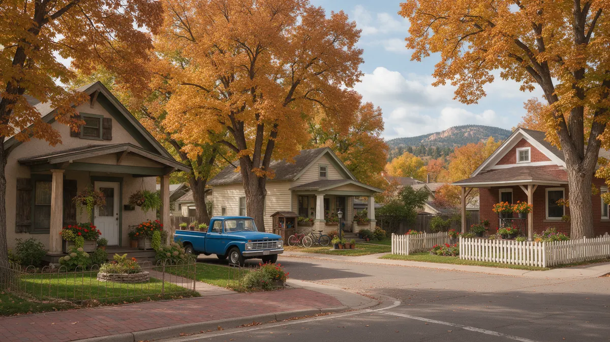

Plumber Fort Collins CO: Your Leak Response Handbook

When you need a plumber in Fort Collins CO, a clear plan helps. This handbook covers the first steps for a leak, how a plumber usually tracks one down, and what to ask once you are connected. Plumbing Pros Colorado is a referral line, not a plumbing company, so the independent plumber you speak with does the assessment and the work.
Immediate steps for any leak
Shut off the main valve and, if water is near outlets or the panel, stay clear and switch off power at the breaker only if it is safe to reach. Open the lowest faucet to drain the lines.
Mop standing water quickly and set up fans if you have them. Water that sits in carpet or against drywall can lead to mold, so drying early matters even before the plumber arrives.
Many homes have a shutoff on the water heater too. Closing that valve is a handy way to stop the heater from refilling if the tank is the culprit.
Clues that the leak is hidden
- spike in the water bill
- hissing inside a wall
- warm patch on a floor
- low pressure upstairs
- sprinkler zone that stays soggy
- stain growing on a ceiling
Houses near College Avenue, Mulberry Street and the neighborhoods along the Spring Creek Trail corridor were built over many decades, so pipe materials differ block to block. Knowing what your house has, copper, galvanized or PEX, is useful information for the plumber.
If you notice water on a garage or basement floor after the washing machine runs, check the hoses at the back. Rubber hoses harden with age, and a slow weep can become a burst.
What a plumber is likely to check
Expect a look at fixtures, the water heater, accessible supply lines and the meter. If nothing is obvious, leak detection gear or a pressure test narrows the zone. For drains, a camera inspection shows what is happening inside the line.
Rental homes and student housing near campus often have shared systems or older fixtures. If you rent, tell the plumber who the landlord or property manager is so approvals can be arranged.
The goal for the plumber is to find the source with the least disruption, so wall openings are kept small and placed where repair will be simplest.
Sprinklers, irrigation and the yard
Fort Collins yards depend on irrigation, and a cracked sprinkler line or a failed backflow device can waste a lot of water before anyone notices. Soggy patches in the lawn, a pooling zone near the curb or a drop in pressure when sprinklers run are common signs.
Winterizing matters. Water left in underground lines can freeze, and a line near Fossil Creek or on a shaded lot may crack even if neighbors fare fine. Ask whether the plumber you are connected with handles irrigation or whether a separate irrigation specialist is better.
Whether you own or rent, ask for a written note on what was fixed. It helps if the issue returns or if a landlord wants confirmation.
Planning for repairs with less disruption
Clear access to the water heater, the main shutoff and the crawlspace before the visit. Pets and kids should be kept away from work areas.
Ask the plumber how long the water will be off and whether you should store water for the day. For homes in Timnath or Windsor beyond the city edge, mention that so the right match is made.
Put reminders in your calendar for spring and fall: test the shutoff, check hoses, look at the water heater. These checks take minutes.
What is particular about Fort Collins
Fort Collins mixes a historic core, a university population and new growth toward Harmony Road and I-25. That means a wide range of building ages, and a range of owners, landlords and renters who each play a part in getting a leak fixed.
The city's cold winters, dry air and landscaping habits also shape plumbing needs. Outdoor lines near Lory State Park foothills or on exposed lots take a beating from wind and frost, and spring is a good time to test them.
Frequently asked questions
Where is my water shutoff usually located?
Often in a basement, utility room or garage wall near where the line enters the house. In some homes it sits in an exterior box. Finding it before an emergency saves time. In older parts of town, the line from the street to the house may be a different material from the plumbing inside. Mention anything you know about it.
Does an old galvanized line mean I need to replace everything?
Not always, but galvanized steel can corrode inside and restrict flow. A plumber can look at the condition and explain whether replacement of a section or the entire run makes sense. Corroded galvanized pipe narrows over time, so water pressure can drop gradually, and many homeowners do not notice until a shower seems weak.
Can a leak damage a foundation?
A sustained leak under or near a slab can soften soil and cause movement. That is one more reason to chase a hidden leak early. The meter's small triangle or dial turns when even a trickle flows, which makes it a handy detector for leaks that sound silent.
What does a sewer camera show?
It shows cracks, roots, offsets and buildup inside the sewer line. It is a way to check a line without digging. Camera work usually takes a short time, and the plumber can usually show you a video clip of what was found.
Who handles a leak in my apartment?
Tell your landlord or property manager first. They may need to authorize the plumber, and responsibility depends on the lease and the location of the leak. Renters should keep copies of messages with the manager, which can help clarify who authorized work and when.
Plumbing services in Fort Collins
- Water Leak Repair
- Emergency Plumbing
- Drain Cleaning
- Water Heater Services
- Sewer Line Repair
- Gas Line Services
- Slab Leak Repair
- Pipe Repair & Replacement
- Toilet Repair
- Bathroom Plumbing
Nearby Colorado cities
- Water leak repair in Dillon
- Water leak repair in Fountain
- Water leak repair in Pueblo
- Water leak repair in Castle Rock
Ready to talk to someone? Call (720) 794-0974 or visit find a plumber near the Poudre River.